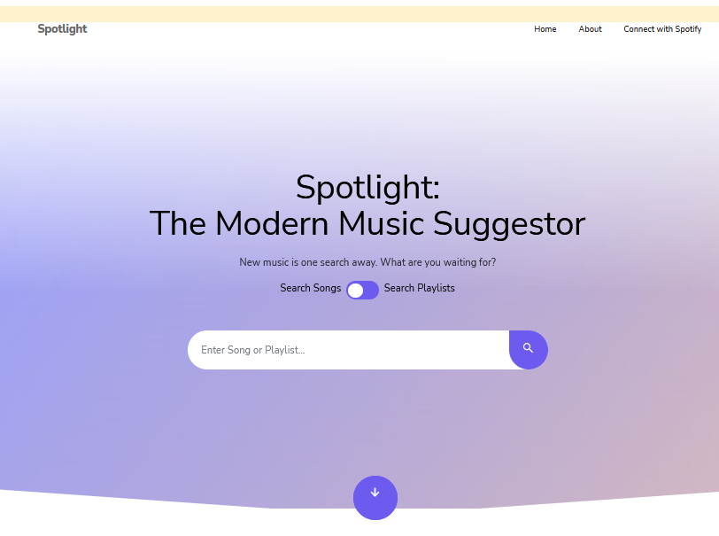
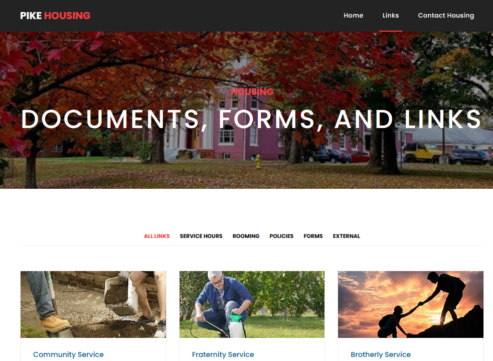

Web-Based Projects
-
Spotlight for Spotify
 High School Senior "Capstone" project utilizing Spotify's Web API to create a music recommendation website that worked better to find music users would enjoy than Spotify's "Discovery Weekly". The subheader is a link if you'd like to check it out.
-
Pike Housing
 A quick and dirty website made for the benefit of the Rose-Hulman Pi Kappa Alpha chapter. This website contains several links to important forms and serves as an easy form access point for the members of the Fraternity.